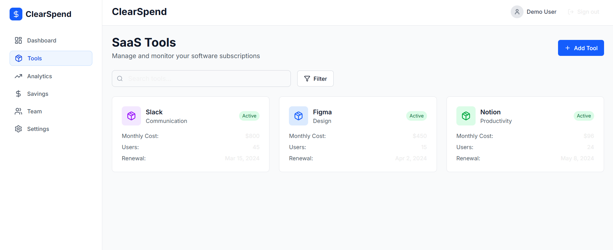

ClearSpend – SaaS Cost Optimization Platform

Project Information
- Project Type: SaaS Platform
- Role: Full-Stack Architect & UI/UX Designer
- Status: In Progress
- Tech Stack: Next.js 14, TypeScript, Tailwind CSS, PostgreSQL, Prisma, Supabase, Stripe, NextAuth.js
Overview
ClearSpend is a SaaS platform designed to help teams analyze, track, and reduce software subscription spending using automated insights, real-time usage monitoring, and AI-driven recommendations. The platform enables teams to manage SaaS renewals, avoid unnecessary expenses, and improve financial efficiency.
Key Features
- AI-powered SaaS detection and auto-categorization.
- Subscription calendar with renewal alerts and reminders.
- Cost analytics dashboard with trends, insights, and usage heatmaps.
- Role-based access and team sharing capabilities.
- Stripe-based billing, trial management, and upgrade flow.
Design Goals
- Create a simple, intuitive interface accessible to finance teams and founders.
- Deliver rapid visual insight through clean dashboards and minimal UX friction.
- Build modular design components scalable for future AI-assisted features.
Current Progress
The platform is in the active development phase with core authentication, dashboard structure, billing integration, and UI system complete. Upcoming milestones include AI-powered suggestions, Slack reminders, and workspace-level analytics.